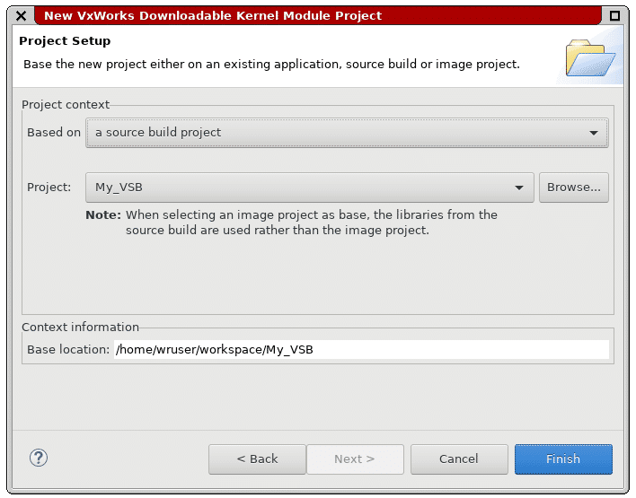
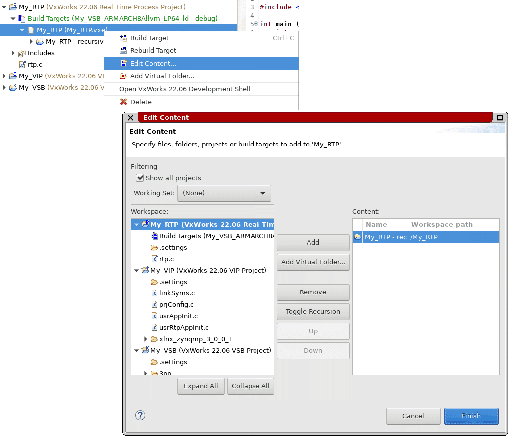
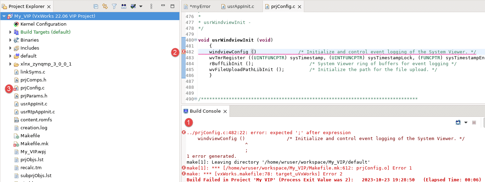

Configuring and setting up the VSB and VIP is known as platform development.
After this section you will be able to:
Application development consists of creating features for your project. During project creation, you have a few different application project types to choose from. The available project types are:
In the list above you can see there are two versions of RTP and DKM. This is because they can make use of makefile-based projects. If the CMake option is chosen, the developer defines the build structure and writes the makefile for the project.
The alternative is that there is no build type. This makes it so you have platform-specific environment for static analysis. You also have the ability to disable the build.
When making a new application build you have two choices for where to make the project:
When making the RTP you must base the project on one of the following:
Since the VSB is the root of the project, the RTP inherits the build specifications from it. The build target for the RTP looks for executable objects by default, which are:
Creating a DKM uses the same method as an RTP project. The DKM can use the default build settings or inherit them from another project. You can always modify the build command later.
When working on your project you can add build targets to it. You can create an unlimited number of them, just note that one build target will generate one binary. You can customize the source contents for each target along with modifying the build tools.
If you do not specify a build target, no initial build target will be created.
Now that you have the project types set up, your VSB, VIP, maybe the RTP and DKM. You will want to add some files to them to start development and adding folders to keep the project organized.
While in Workbench, you can right click in the Project Explorer to open a drop-down menu. Go the tab that says New, this will show you the different file choices.
Making a new file is simple, you pick the template you want or start from a blank file. The defaults you can choose are:
When you make a new file, you can make it directly inside of a project. During creation you have a few options, the first is picking a local name, or create and use a path variable for the file. Once you decided that you can also use the Advanced option to link it to existing files.
Folders are much simpler than files, when you go to create one you only have two choices:
When you pick the option, you will create a name and chose which project type it will be a part of. Then it will appear in the project structure ready for use.
When working on your project you might want to exclude a file or folder without deleting them, you can do this in Workbench and do it for each build target. To exclude them, right-click the file or folder under the desired build target and select Edit Excludes.
- The example above uses a DKM named myDKM.
Exporting and importing projects is a time saver and is a valuable skill in Workbench. Exporting is taking your project and archiving it so that Workbench can read it at a later time. Importing is taking the archive you made or someone else made and adding it to your project. Take a look at the features below:
When we show up to the present moment with all of our senses, we invite the world to fill us with joy. The pains of the past are behind us. The future has yet to unfold. But the now is full of beauty simply waiting for our attention.
When configuring your project, you will need to add build properties to it. There are three main components to the build properties:
Workbench has predefined settings for specific builds, these include user applications, shared libraries, kernel objects, or OS images. You can change the predefined settings in the project properties, but the settings and values depend on the project type.
To build the project, right-click the project in the Project Explorer to bring up the menu. Here you have two choices:
Some notable commands in this drop down also include:
In the Build menu you have two options to build from, these are:
In this menu you can change the active build spec with Set Active Build Spec... and manage it too with Manage Active Build Specs...
When a build fails in Workbench, it ends. This will display in the Build Console with a detailed message about why the build failed. This can be logged and saved as output. To go to the error, double click it in the Build Console to open the Editor View.
When an error occurs, it will be highlighted red in three locations, the build console with a detailed message, the line number of the error in the afflicted file, and lastly in the Project Explorer next to the file.

- This error is caused by a missing semicolon on line 482.
Configuring and setting up the VSB and VIP is known as platform development.

VxWorks is a robust operating system; it has many useful and powerful features for you to use in your project.

All VxWorks projects are different, but they all require hardware configuration.
Step-by-step instructions for running the VxWorks 6.9.3.1 BSP on the Zynq-7000 SoC.